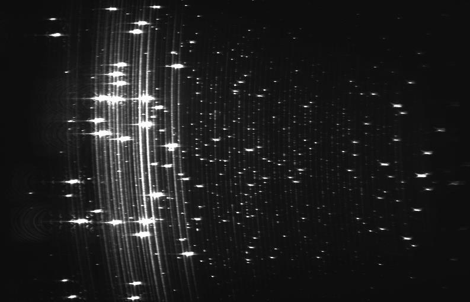

Research continuation
The single current narrative from the original MSc architecture through V25 fabrication.
Read synthesisA–Z research provenance
The curated pages explain the present interpretation; this archive preserves the chronological source record. Search by filename, date, subject or extracted first-page content, and read later calibration or diagnostic work before treating an earlier explanation as current.

Current interpretation
The single current narrative from the original MSc architecture through V25 fabrication.
Read synthesisEndurance, phase correlation, multi-line tracking and the limits of cross-run comparison.
Open measured resultsThe diagnostic chain and the current physical camera-airflow hypothesis.
Trace the chainSearchable PDF record
Duplicate copies are identified by SHA-256 content identity. Classification is for navigation; scientific claims should be checked against the report’s stated interval and conditions.
Loading report index…